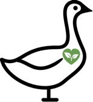

Eco-Fest


recycling
eco-fest is committed to enhancing the environment through our operations wherever possible, and minimising any negative impact. The Festival also commits to maintaining the rich and diverse environment that has evolved through alternative land usage. Holding a festival once a year in the middle of the growing season prevents the use of environmentally damaging conventional farming practices which would have a more intrusive impact on the ecology.
We want people to think about their journey to the Festival: to use public transport or, if coming by car, to share transport with others and maximise the carload.
The festival is committed to minimising the amount of waste, and managing the on site collection of that waste efficiently, “reduce, reuse and recycle”. We want all Festival goers to think ‘zero waste’ and to take home what they bring onto the Festival site. We want Festivals goers to think responsibly when they are packing their things to come to Eco-Fest, don’t bring items that will end up in Landfill, or that you won’t be able to take back home again.
“Limit what you bring, and clean up behind you.” The Festival commits to continuing its policy of reducing the percentage of waste that goes to landfill, by placing controls on what is bought on site by staff, contractors, sponsors and traders and by emphasis on their responsibility not to bring items that will end in landfill. All cans, glass, paper, wood and organic waste are separated and recycled. There are 1500 bins around the site clearly identified for either wet or dry recyclable materials or non-recyclable rubbish.
We at Eco-fest thank you for helping us to keep our world green.
Want to learn more about recycling? click here